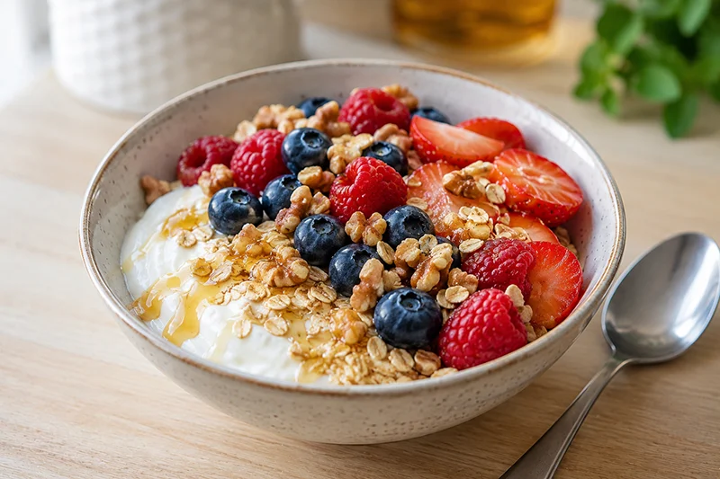

Receta saludable
Yogur griego con avena y frutos rojos
El yogur griego con avena y frutos rojos combina proteínas, fibra y fruta en un desayuno sencillo y muy refrescante. Una receta rápida y equilibrada para empezar el día con energía.
Ingredientes
- 200 g de yogur griego natural
- 30 g de copos de avena
- 50 g de frutos rojos (arándanos, frambuesas o fresas)
- 1 cucharadita de miel (opcional)
- 10 g de nueces troceadas (opcional)
Preparación
- Coloca el yogur griego en un bol.
- Añade los copos de avena por encima.
- Incorpora los frutos rojos repartidos de forma uniforme.
- Añade la miel si deseas un toque más dulce.
- Termina con las nueces troceadas y sirve inmediatamente.
Consejo práctico
Si preparas la mezcla de yogur y avena la noche anterior, los copos se hidratarán y conseguirás una textura aún más cremosa al día siguiente.